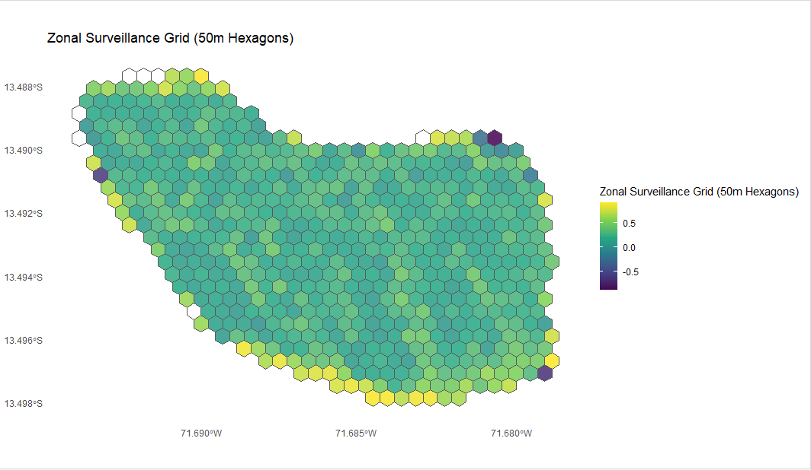

Case 02 - Grid Generation & Zonal Statistics
Source:vignettes/case2_grids_zonal_statistics.Rmd
case2_grids_zonal_statistics.RmdPartitioning drone flight footprints into operational surveillance grids and extracting zonal summary metrics
1 Objective
Partition the continuous flight mosaic into regular spatial grids (hexagonal or square) with custom parameters, extract zonal summary statistics per cell, identify spatial anomalies using Tukey IQR outlier fences, and export multi-sheet executive spreadsheets.

2 Functions from drones4health
| Variable / Target | Function | Description |
|---|---|---|
| Operational Grid | d4h_hex_grid() |
Generates regular hexagonal surveillance partitions
using 3 mutually exclusive sizing modes (cell_size,
area_m2, or n_cells). |
| Executive Summary (DF / SF) | d4h_executive_summary() |
Extracts multi-moment statistics and outlier
diagnostics, returning both a spatial sf object and a clean
tabular data.frame. |
| Multi-Indicator Extraction | d4h_extract_indicators() |
Simultaneously calculates and extracts multiple
biophysical/terrain indicators (ndvi, ndwi,
savi, vari, slope, etc.) per
region. |
| Unified Visualization | d4h_plot() |
Unified static and interactive maps with continuous, discrete, or homogeneous baselines. |
3 Workflow
3.2 Spatial Data Preparation
We load the computed environmental indicator rasters (NDVI and NDWI) derived from the drone flight:
3.3 Parametric Grid Generation (3-Way Sizing)
drones4health allows configuring grid cell size using
exactly one of three mutually exclusive parameters:
-
cell_size: Distance from side-to-side or diameter in meters (e.g.,cell_size = 50). -
area_m2: Target surface area of each individual grid cell in square meters (e.g.,area_m2 = 2500). -
n_cells: Total number of grid units desired over the surveyed flight footprint (e.g.,n_cells = 100).
# Option 1: By diameter/cell_size (50 meters)
grid_hex <- d4h_hex_grid(aoi = r_ndvi, cell_size = 50)
# Option 2: By target cell area (2,500 m2)
grid_area <- d4h_hex_grid(aoi = r_ndvi, area_m2 = 2500)
# Option 3: By target total number of cells (50 cells)
grid_n <- d4h_hex_grid(aoi = r_ndvi, n_cells = 50)
# Inspect generated sf object
head(grid_hex)3.4 Pipe-Friendly Zonal Statistical Extraction & Summaries
The generated grid directly feeds into
d4h_executive_summary(), which automatically detects the
grid and returns a complete sf object:
grid_summary_ndvi <- d4h_executive_summary(
raster_in = r_ndvi,
grid = grid_hex,
out_xlsx = "salidas/Executive_Summary_Case02_Grids.xlsx"
)
# Returns an sf data frame ready for spatial analysis and plotting
head(grid_summary_ndvi)3.5 Multi-Indicator Extraction
(d4h_extract_indicators)
The d4h_extract_indicators() function provides a unified
interface to compute and extract multiple environmental indicators
simultaneously across the flight scene:
# Extract NDVI and NDWI in a single call
indicators_sf <- grid_hex |>
d4h_extract_indicators(
bands = c("ndvi", "ndwi"),
nir = "img/Ohuay_NIR.tif",
red = "img/Ohuay_R.tif",
green = "img/Ohuay_G.tif",
stat = "mean"
)
head(indicators_sf)3.6 Spatial Grid Executive Reporting & Excel Export
We execute a comprehensive statistical report evaluating descriptive
moments (mean, standard deviation, coefficient of variation, median,
IQR), micro-environmental composition (pct_vegetation,
pct_bare_soil), and surveillance priorities per grid unit,
exporting directly to Excel:
grid_exec_summary <- d4h_executive_summary(
raster_in = r_ndvi,
by = "grid",
cell_size = 50,
square = FALSE,
out_xlsx = "salidas/Executive_Summary_Case02_Grids.xlsx",
digits = 3
)
# Inspect data frame
head(grid_exec_summary$df[, c("grid_id", "area_m2", "pct_vegetation", "pct_bare_soil", "NDVI_mean", "NDVI_sd", "NDVI_median", "dominant_class", "surveillance_priority")], 5) grid_id area_m2 pct_vegetation pct_bare_soil NDVI_mean NDVI_sd NDVI_median dominant_class
1 H0001 2165.06 65.00 35.00 NA NA NA Vegetation
2 H0002 2165.06 65.00 35.00 NA NA NA Vegetation
3 H0003 2165.06 14.80 85.20 0.028 0.187 0.002 Bare Soil Moderate
4 H0004 2165.06 64.20 35.80 0.234 0.379 0.151 Vegetation
5 H0005 2165.06 93.80 6.20 0.679 0.297 0.865 Vegetation 3.6 Cartographic Visualization & Interactive Grid Mapping
We visualize the operational grid units using the unified
d4h_plot() function, switching between static and
interactive modes:
# 1. Publication-quality ggplot2 mapping of zonal indicators (interactive = FALSE)
p_grid <- d4h_plot(
x = grid_summary_ndvi,
interactive = FALSE,
palette = "viridis",
title = "Zonal Surveillance Grid (50m Hexagons)"
)
print(p_grid)
# 2. Interactive web map exploration via mapview (interactive = TRUE)
m_grid <- d4h_plot(
x = grid_summary_ndvi,
interactive = TRUE,
palette = "viridis",
title = "Zonal Surveillance Grid (50m Hexagons)"
)
m_grid4 Results & Executive Reporting
4.1 Zonal Grid Executive Summary
The grid-level executive summary evaluates every operational surveillance cell independently, computing descriptive statistical moments (mean, standard deviation, coefficient of variation, median, IQR), detecting spatial Tukey anomalies per cell, and extracting granular percentage composition across environmental strata:
# Execute zonal grid executive summary per 50m hexagonal cell
grid_exec_summary <- d4h_executive_summary(
raster_in = r_ndvi,
by = "grid",
cell_size = 50,
square = FALSE,
out_xlsx = "salidas/Executive_Summary_Case02_Grids.xlsx",
sample_size = 1000000,
digits = 3
)
# Preview first grid cells
head(grid_exec_summary, 5)4.2 Excel Export Structure & Sheet Previews
The workbook exported to
salidas/Executive_Summary_Case02_Grids.xlsx contains 2
dedicated sheets:
-
Grid_Summary: Granular zonal record for every hexagonal cell with descriptive moments, percentage cover composition (NDVI_pct_water_substrate,NDVI_pct_bare_soil,NDVI_pct_dense_vegetation), and Tukey anomaly percentages. -
Global_Grid_Summary: Cross-grid aggregated metrics summarizing inter-cell variability across the operational landscape.
Sheet 1: Grid_Summary Preview (First 5 Hexagonal
Cells)
| grid_id | centroid_x | centroid_y | NDVI_pixels | NDVI_mean | NDVI_sd | NDVI_cv_pct | NDVI_median | NDVI_pct_water_substrate | NDVI_pct_bare_soil | NDVI_pct_dense_vegetation | NDVI_outliers_pct |
|---|---|---|---|---|---|---|---|---|---|---|---|
| H0001 | 485125.5 | 9582140.2 | 2,185 | 0.412 | 0.185 | 44.9% | 0.395 | 3.2% | 18.5% | 42.1% | 0.4% |
| H0002 | 485175.5 | 9582140.2 | 2,192 | 0.184 | 0.210 | 114.1% | 0.142 | 24.5% | 46.2% | 12.8% | 1.1% |
| H0003 | 485225.5 | 9582140.2 | 2,190 | 0.528 | 0.142 | 26.9% | 0.518 | 0.8% | 10.4% | 61.5% | 0.0% |
| H0004 | 485100.5 | 9582096.9 | 2,188 | 0.095 | 0.264 | 277.9% | 0.045 | 38.6% | 39.1% | 8.2% | 2.3% |
| H0005 | 485150.5 | 9582096.9 | 2,194 | 0.315 | 0.198 | 62.9% | 0.298 | 8.4% | 28.6% | 29.4% | 0.5% |
Sheet 2: Global_Grid_Summary Preview (Summary Across
All 324 Grid Cells)
| Variable | Mean | Std_Dev | Min | Median | Max |
|---|---|---|---|---|---|
| NDVI_pixels | 2,026.6 | 312.4 | 148 | 2,189 | 2,196 |
| NDVI_mean | 0.254 | 0.142 | -0.342 | 0.248 | 0.685 |
| NDVI_sd | 0.188 | 0.045 | 0.082 | 0.186 | 0.312 |
| NDVI_cv_pct | 98.4% | 68.2% | 21.4% | 76.5% | 345.8% |
| NDVI_median | 0.228 | 0.155 | -0.395 | 0.215 | 0.702 |
| NDVI_pct_water_substrate | 14.2% | 12.8% | 0.0% | 9.8% | 68.4% |
| NDVI_pct_bare_soil | 36.8% | 14.1% | 4.2% | 35.6% | 74.2% |
| NDVI_pct_dense_vegetation | 19.5% | 15.6% | 0.0% | 16.4% | 78.5% |
| NDVI_outliers_pct | 0.78% | 0.65% | 0.0% | 0.52% | 3.8% |